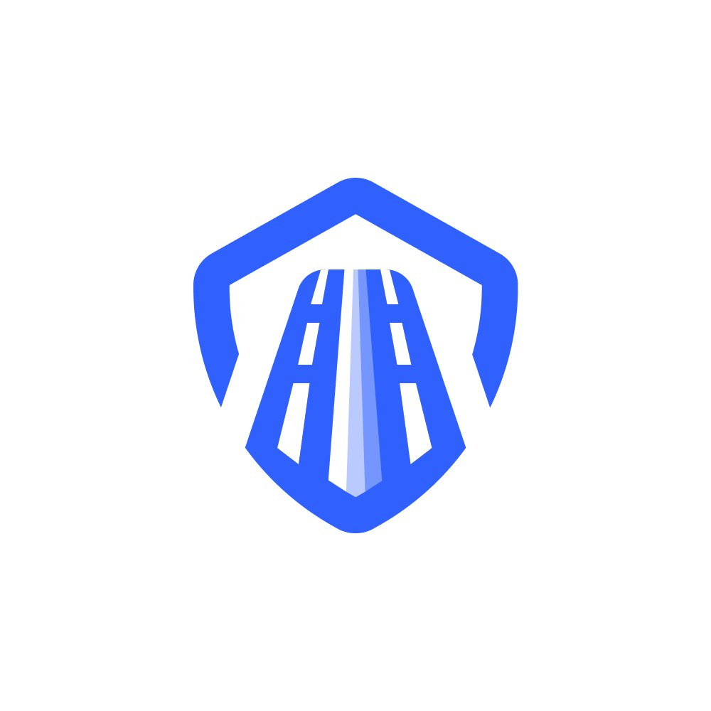

SmartLine4 élèves de Terminale au lycée LaSalle Passy Buzenval — finalistes des Olympiades des Sciences de l'Ingénieur 2026.
Conception maquette, mécanique des blocs modulables et étude d'impact environnemental CO₂.
Développement Arduino, câblage complet, pilotage des écrans LCD et bandeaux LED.
Diagrammes SysML, supervision caméra en temps réel et cohérence globale du système.
Code Arduino, application mobile de suivi et stratégie de communication & partenariats.
Rueil-Malmaison, Île-de-France
Olympiades des Sciences de l'Ingénieur 2026
Thème · L'ingénierie au service de la ville de demain
Explorez notre dépôt GitHub pour accéder à l'ensemble des ressources du projet.
Voir le repo GitHub →